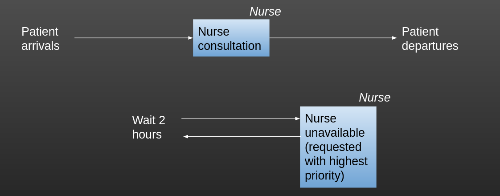

class g:
# Inter-arrival times
patient_inter = 5
# Activity times
mean_n_consult_time = 6
# Resource numbers
number_of_nurses = 1
unav_time_nurse = 15 ##NEW
unav_freq_nurse = 120 ##NEW
# Simulation meta parameters
sim_duration = 2880
number_of_runs = 1
warm_up_period = 144011 Modelling Resource Unavailability
So far in our models, we’ve assumed that, outside of working on our modelled activities, our modelled resources are always available for the time we’re simulating. But that won’t always be the case in the real world.
Resources may not always be “on shift”, or may be called off to other areas of the system (e.g. different parts of a hospital). How we deal with this depends on the answer to the following question :
When this happens, does another resource of the same type cover?
If yes, then it doesn’t matter to the model and we don’t need to change the model to reflect it. For example, in a ward there might always be 5 doctors available, even if who those doctors are changes.
If no, and the level of resource availability changes, then we can model this in SimPy by “obstructing” a resource for a certain amount of time.
Let’s consider our nurse consultation model as an example. Let’s imagine that every 2 hours, our nurse has a 15 minute break.
Let’s look at how we’d model that.

11.1 The approach
Basically, we will : - Set up the frequency and duration of unavailability as parameter values in g class - Make sure that the nurse is set up as a PriorityResource - Create a new entity generator whose sole purpose is to demand the nurse resource with a higher priority than any patient every 2 hours, and will freeze the nurse with them for 15 minutes (this means the nurse will complete the current patient, they won’t walk out midway through!) - Start this new generator running in our run method of the Model class.
11.2 Coding the approach
11.2.1 The g class
In the g class, we have added values to specify how long nurse is unavailable and at what frequency. Un this example, every 2 hours, the nurse will be unavailable for 15 minutes.
11.2.2 The Patient class
The patient class is unchanged.
11.2.3 The Model class
11.2.3.1 The obstruct_nurse method
We create a new method within the model class called obstruct_nurse.
Tip
Note that here we are using a priority value of -1.
Negative priorities are higher (i.e. are seen first) compared to higher priorities; a priority value of -1 will be seen before a priority value of 1, but a priority value of 1 will be seen before a priority value of 2.
This is a very helpful feature to use to keep your breaktime functions from clashing with high-priority patients.
##NEW
# Generator function to obstruct a nurse resource at specified intervals
# for specified amounts of time
def obstruct_nurse(self):
while True:
print (f"{self.env.now:.2f}: The nurse will go on a break at around time",
f"{(self.env.now + g.unav_freq_nurse):.2f}")
# The generator first pauses for the frequency period
yield self.env.timeout(g.unav_freq_nurse)
# Once elapsed, the generator requests (demands?) a nurse with
# a priority of -1. This ensure it takes priority over any patients
# (whose priority values start at 1). But it also means that the
# nurse won't go on a break until they've finished with the current
# patient
with self.nurse.request(priority=-1) as req:
yield req
print (f"{self.env.now:.2f}: The nurse is now on a break and will be back at",
f"{(self.env.now + g.unav_time_nurse):.2f}")
# Freeze with the nurse held in place for the unavailability
# time (ie duration of the nurse's break). Here, both the
# duration and frequency are fixed, but you could randomly
# sample them from a distribution too if preferred.
yield self.env.timeout(g.unav_time_nurse)11.2.3.2 The run method
In our run method, we now start up the obstruct_nurse process in addition to the generator_patient_arrivals process.
def run(self):
# Start up DES generators
self.env.process(self.generator_patient_arrivals())
##NEW - we also need to start up the obstructor generator now too
self.env.process(self.obstruct_nurse())
# Run for the duration specified in g class
self.env.run(until=(g.sim_duration + g.warm_up_period))
# Calculate results over the run
self.calculate_run_results()
return self.results_df11.2.4 The Trial class
The trial class is unchanged.
11.3 The full code
The full code is given below.
Click here to view the full code
import simpy
import random
import pandas as pd
# Class to store global parameter values.
class g:
# Inter-arrival times
patient_inter = 5
# Activity times
mean_n_consult_time = 6
# Resource numbers
number_of_nurses = 1
##NEW - added values to specify how long nurse is unavailable and at what
# frequency (in this example, every 2 hours, the nurse will be unavailable
# for 15 minutes)
unav_time_nurse = 15
unav_freq_nurse = 120
# Simulation meta parameters
sim_duration = 2880
number_of_runs = 1
warm_up_period = 1440
# Class representing patients coming in to the clinic.
class Patient:
def __init__(self, p_id):
self.id = p_id
self.q_time_nurse = 0
self.priority = random.randint(1,5)
# Class representing our model of the clinic.
class Model:
# Constructor
def __init__(self, run_number):
# Set up SimPy environment
self.env = simpy.Environment()
# Set up counters to use as entity IDs
self.patient_counter = 0
# Set up resources
self.nurse = simpy.PriorityResource(self.env,
capacity=g.number_of_nurses)
# Set run number from value passed in
self.run_number = run_number
# Set up DataFrame to store patient-level results
self.results_df = pd.DataFrame()
self.results_df["Patient ID"] = [1]
self.results_df["Q Time Nurse"] = [0.0]
self.results_df.set_index("Patient ID", inplace=True)
# Set up attributes that will store mean queuing times across the run
self.mean_q_time_nurse = 0
random.seed(42)
# Generator function that represents the DES generator for patient arrivals
def generator_patient_arrivals(self):
while True:
self.patient_counter += 1
p = Patient(self.patient_counter)
self.env.process(self.attend_clinic(p))
sampled_inter = random.expovariate(1.0 / g.patient_inter)
yield self.env.timeout(sampled_inter)
##NEW
# Generator function to obstruct a nurse resource at specified intervals
# for specified amounts of time
def obstruct_nurse(self):
while True:
print (f"{self.env.now:.2f}: The nurse will go on a break at around time",
f"{(self.env.now + g.unav_freq_nurse):.2f}")
# The generator first pauses for the frequency period
yield self.env.timeout(g.unav_freq_nurse)
# Once elapsed, the generator requests (demands?) a nurse with
# a priority of -1. This ensure it takes priority over any patients
# (whose priority values start at 1). But it also means that the
# nurse won't go on a break until they've finished with the current
# patient
with self.nurse.request(priority=-1) as req:
yield req
print (f"{self.env.now:.2f}: The nurse is now on a break and will be back at",
f"{(self.env.now + g.unav_time_nurse):.2f}")
# Freeze with the nurse held in place for the unavailability
# time (ie duration of the nurse's break). Here, both the
# duration and frequency are fixed, but you could randomly
# sample them from a distribution too if preferred.
yield self.env.timeout(g.unav_time_nurse)
# Generator function representing pathway for patients attending the
# clinic.
def attend_clinic(self, patient):
# Nurse consultation activity
start_q_nurse = self.env.now
with self.nurse.request(priority=patient.priority) as req:
yield req
end_q_nurse = self.env.now
patient.q_time_nurse = end_q_nurse - start_q_nurse
if self.env.now > g.warm_up_period:
self.results_df.at[patient.id, "Q Time Nurse"] = (
patient.q_time_nurse
)
sampled_nurse_act_time = random.expovariate(1.0 /
g.mean_n_consult_time)
yield self.env.timeout(sampled_nurse_act_time)
# Method to calculate and store results over the run
def calculate_run_results(self):
self.results_df.drop([1], inplace=True)
self.mean_q_time_nurse = self.results_df["Q Time Nurse"].mean()
# Method to run a single run of the simulation
def run(self):
# Start up DES generators
self.env.process(self.generator_patient_arrivals())
##NEW - we also need to start up the obstructor generator now too
self.env.process(self.obstruct_nurse())
# Run for the duration specified in g class
self.env.run(until=(g.sim_duration + g.warm_up_period))
# Calculate results over the run
self.calculate_run_results()
return self.results_df
# Class representing a Trial for our simulation
class Trial:
# Constructor
def __init__(self):
self.df_trial_results = pd.DataFrame()
self.df_trial_results["Run Number"] = [0]
self.df_trial_results["Mean Q Time Nurse"] = [0.0]
self.df_trial_results.set_index("Run Number", inplace=True)
# Method to calculate and store means across runs in the trial
def calculate_means_over_trial(self):
self.mean_q_time_nurse_trial = (
self.df_trial_results["Mean Q Time Nurse"].mean()
)
def run_trial(self):
# Run the simulation for the number of runs specified in g class.
# For each run, we create a new instance of the Model class and call its
# run method, which sets everything else in motion. Once the run has
# completed, we grab out the stored run results and store it against
# the run number in the trial results dataframe. We also return the
# full patient-level dataframes.
# First, create an empty list for storing our patient-level dataframes.
results_dfs = []
for run in range(g.number_of_runs):
my_model = Model(run)
patient_level_results = my_model.run()
# First let's record our mean wait time for this run
self.df_trial_results.loc[run] = [my_model.mean_q_time_nurse]
# Next let's work on our patient-level results dataframes
# We start by rounding everything to 2 decimal places
patient_level_results = patient_level_results.round(2)
# Add a new column recording the run
patient_level_results['run'] = run
# Now we're just going to add this to our empty list (or, after the first
# time we loop through, as an extra dataframe in our list)
results_dfs.append(patient_level_results)
all_results_patient_level = pd.concat(results_dfs)
# This calculates the attribute self.mean_q_time_nurse_trial
self.calculate_means_over_trial()
# Once the trial (ie all runs) has completed, return the results
return self.df_trial_results, all_results_patient_level, self.mean_q_time_nurse_trial
# Method to print trial results, including averages across runs
def print_trial_results(self):
print ("Trial Results")
print (self.df_trial_results)
print (f"Mean Q Nurse : {self.mean_q_time_nurse_trial:.1f} minutes")11.4 Evaluating the outputs
Let’s look at the printed output showing when our nurses were obstructed.
The first number in each line of output shows the simulation time when the message was generated.
0.00: The nurse will go on a break at around time 120.00
120.15: The nurse is now on a break and will be back at 135.15
135.15: The nurse will go on a break at around time 255.15
258.44: The nurse is now on a break and will be back at 273.44
273.44: The nurse will go on a break at around time 393.44
404.26: The nurse is now on a break and will be back at 419.26
419.26: The nurse will go on a break at around time 539.26
540.82: The nurse is now on a break and will be back at 555.82
555.82: The nurse will go on a break at around time 675.82
680.63: The nurse is now on a break and will be back at 695.63
695.63: The nurse will go on a break at around time 815.63
827.06: The nurse is now on a break and will be back at 842.06
842.06: The nurse will go on a break at around time 962.06
968.91: The nurse is now on a break and will be back at 983.91
983.91: The nurse will go on a break at around time 1103.91
1106.20: The nurse is now on a break and will be back at 1121.20
1121.20: The nurse will go on a break at around time 1241.20
1242.30: The nurse is now on a break and will be back at 1257.30
1257.30: The nurse will go on a break at around time 1377.30
1389.51: The nurse is now on a break and will be back at 1404.51
1404.51: The nurse will go on a break at around time 1524.51
1532.18: The nurse is now on a break and will be back at 1547.18
1547.18: The nurse will go on a break at around time 1667.18
1672.09: The nurse is now on a break and will be back at 1687.09
1687.09: The nurse will go on a break at around time 1807.09
1807.86: The nurse is now on a break and will be back at 1822.86
1822.86: The nurse will go on a break at around time 1942.86
1947.64: The nurse is now on a break and will be back at 1962.64
1962.64: The nurse will go on a break at around time 2082.64
2084.27: The nurse is now on a break and will be back at 2099.27
2099.27: The nurse will go on a break at around time 2219.27
2221.93: The nurse is now on a break and will be back at 2236.93
2236.93: The nurse will go on a break at around time 2356.93
2359.05: The nurse is now on a break and will be back at 2374.05
2374.05: The nurse will go on a break at around time 2494.05
2494.42: The nurse is now on a break and will be back at 2509.42
2509.42: The nurse will go on a break at around time 2629.42
2635.29: The nurse is now on a break and will be back at 2650.29
2650.29: The nurse will go on a break at around time 2770.29
2776.28: The nurse is now on a break and will be back at 2791.28
2791.28: The nurse will go on a break at around time 2911.28
2911.72: The nurse is now on a break and will be back at 2926.72
2926.72: The nurse will go on a break at around time 3046.72
3050.18: The nurse is now on a break and will be back at 3065.18
3065.18: The nurse will go on a break at around time 3185.18
3203.13: The nurse is now on a break and will be back at 3218.13
3218.13: The nurse will go on a break at around time 3338.13
3350.63: The nurse is now on a break and will be back at 3365.63
3365.63: The nurse will go on a break at around time 3485.63
3486.03: The nurse is now on a break and will be back at 3501.03
3501.03: The nurse will go on a break at around time 3621.03
3623.49: The nurse is now on a break and will be back at 3638.49
3638.49: The nurse will go on a break at around time 3758.49
3768.95: The nurse is now on a break and will be back at 3783.95
3783.95: The nurse will go on a break at around time 3903.95
3908.67: The nurse is now on a break and will be back at 3923.67
3923.67: The nurse will go on a break at around time 4043.67
4045.96: The nurse is now on a break and will be back at 4060.96
4060.96: The nurse will go on a break at around time 4180.96
4184.07: The nurse is now on a break and will be back at 4199.07
4199.07: The nurse will go on a break at around time 4319.07Now let’s look at some of the other outputs and compare them with a version without the nurse obstruction.
Now let’s look at some of the other outputs and compare them with a version without the nurse obstruction.
The average wait when there are no nurse breaks is 143.18 minutesThe average wait when there are nurse breaks is 299.7 minutes